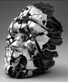
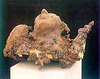
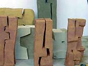
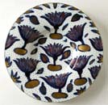
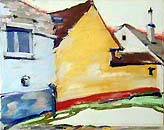
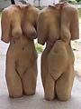

|
Articles |
|
|
|
|
The Hungarian Connection
A selection of Hungarian ceramic artists
László
Fekete (b. 1949). Hungarian studio potter. Fekete studied
at the Academy of Applied Arts in Budapest under Imre Schrammel,
graduating in 1974. He makes intricate stoneware and porcelain sculpture
with social commentary at its heart, sometimes decorating the works
with readymade industrial decals. He also creates works by assembling
seconds from the Herend Porcelain
Manufactory.
|
|
György
Fusz (b. 1955). Hungarian ceramist. Fusz studied at the
Academy of Applied Art in Budapest. He makes hand-built, hybrid
figurative-abstract sculpture, based on the language of the human
body. Fusz was visiting guest artist at the Clay Studio in Philadelphia
in 1999 and has been a resident artist at the International
Ceramics Studio in Hungary. He is considered one of Hungary's
foremost ceramic sculptors.
|
|
Maria Geszler-Garzuly - see Artist
of the Week.
|
|
Sándor
Kecskeméti (b. 1947). Kecskeméti was apprenticed
to master potter Tamôs Lôszlô from 1965-67. He
then studied at the Academy of Applied Arts in Budapest under Professor
Arpád Csekovszky. Since 1985 he has been a teacher on the
MA course at the International Ceramics Studio
and in 1987 he became Professor of Ceramics at the Academy of Applied
Arts. He makes large-scale, monumental sculpture, sometimes over
four meters in height. Between 1990-93 Kecskeméti also worked
on architectural commissions in Germany in collaboration with the
architect Egon Kunz. He cites natural rock formations, monuments
such as Stonehenge and the sculptor Henry Moore as his early influences.
|
|
Márta
Nagy (b. 1954). Nagy graduated from the Hungarian Academy
of Craft and Design in 1979, then worked as a designer in different
porcelain factories. In 1995-98 she took part in the Doctor of Liberal
Arts program under Imre Schrammel at the Janus Pannonius University.
In 2000 she became a Doctor of Liberal Arts at the Pécs University,
where she is now professor. Nagy taught at the Academy of Craft
and Design from 1989-96 as lecturer and from 1992 in the Master-School.
She has contributed designs to the Herend
Porcelain Manufactory since 1996. Nagy has received numerous
fellowships, including several from the International
Ceramics Studio and the Ceramics Colony, Siklós,
as well as the Lajos Kozma fellowship in 1988, the fellowship of
the Hungarian Academy in Rome in 1992 and 1993 and a fellowship
from the Clay Studio Philadelphia in 1999. Her numerous awards include
a Bavarian State Award in 1988, a 1st Prize at the Hungarian Ceramics
Biennial, Pécs, in 1992 and a 2nd Prize in 2004, and a Diploma
of Honor at the 1st World Ceramic Biennial, Ichon, Korea, in 2001.
|
|
Janos
Probstner is a well known Hungarian ceramist and teacher. He established
the International Ceramics Studio in
1978 and has since then been its director. He also organized the International
Symposium East meets West in Kecskemét, together with
Eva Kadasi in 1991. |
|
Imre
Schrammel (b. 1933). Hungarian ceramist and designer. Schrammel
studied under Miklós Borsos at the Porcelain Department at
the Hungarian College of Applied Arts. He worked as artistic adviser
at the Hollóháza Porcelain Factory from 1959-62 and
has taught at several institutions, including the Hungarian College
of Applied Arts and the Janus Pannonius University in Pécs,
where he helped to establish the Fine Arts Master Training Institute
and was appointed Professor in 1991. He also served as rector of
the Hungarian College of Applied Arts from 1993-99 and has worked
as artistic adviser at the Herend
Porcelain Manufactory since 1996. Schrammel has become well
known for his relief murals and figurative sculpture, and since
the 1980s, figurative, mythical nudes. He has been a member of the
Hungarian Kecskemét Group since1980, was a founding member
of the Hungarian Academy of Arts in 1993. |
|
|
The International Ceramics Studio
Artist of the Week - Maria
Geszler-Garzuly
DVD Review: Eva Zeisel - Throwing Curves
More Articles
|